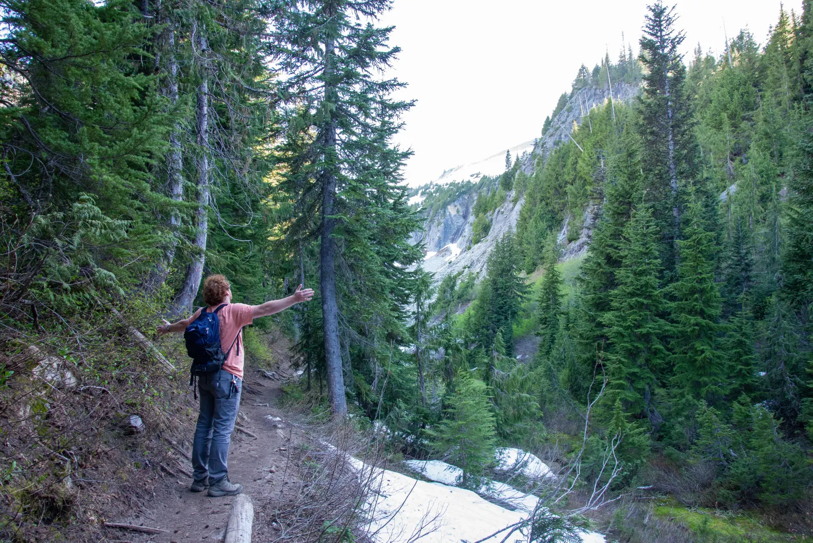

If you found this through something I built, this page is the short version of who I am and what I’m trying to learn.
My background is mostly in software. I spent a good part of my teens building products, working at startups, and trying to start a couple of my own. Lately my attention has moved toward robotics: the place where code has to deal with motors, mass, friction, noisy sensors, and the rest of the physical world.
I’m back in school online through Bellevue College, filling in the math, physics, electronics, and mechanics I skipped over while I was busy shipping software. The plan is to continue at the University of Washington after Bellevue.

a trail outside Seattle, June 2026
01
what i’m doing now
My main project outside school is a humanoid robot. I wanted one problem large enough to force me to learn the whole stack, so I’m working through the mechanical, electrical, controls, and simulation sides together. Most of it is still rough.
I’m building it in the open and writing down the experiments, mistakes, and decisions as I go. Finished projects are useful, but the half-working version is usually where the real information is.
My two startups, Kallro and GoLocal/Circliq, have both been sunset. I’m glad I built them. I also don’t feel much urgency to replace them with another company. For now I want to get a degree, learn hardware properly, and make things without needing every project to become a business.
I bartend to pay my bills. It is my income, not my career, so I leave my main work off this site. This place is for the work I can share.
02
if you’re here because of my work
I like useful problems that sit between software and hardware, especially when they require learning in public and explaining the system clearly. I have years of experience shipping software; I’m now deliberately adding the physical half.
If you’re interested in robotics, the build notes below are the best place to start. If you’re thinking about hiring me or working on something together, look through what I’ve built and send me a note. If you just wanted to know who was behind something you found, the rest of this page is probably enough.
03
notes and ongoing work
I’m using this site as an index for things that are useful before they are polished: experiments, build logs, reading notes, and longer essays.